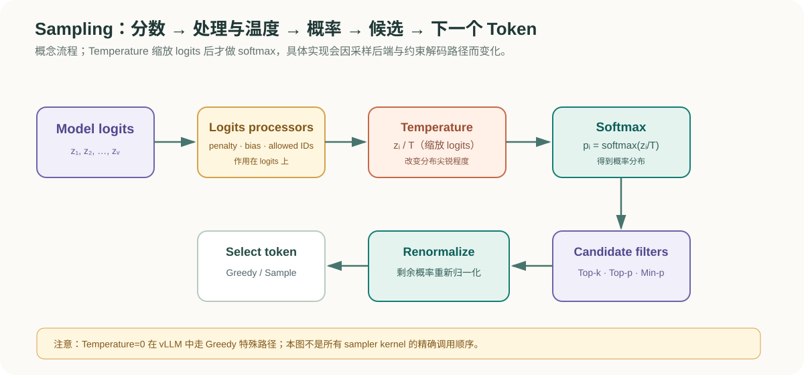

第 14 章 · 安装、模型接入与生成控制
Sampling & Decoding：模型如何选出下一个 Token
模型输出的是一组 logits，不是唯一正确的下一个词。Sampling 参数决定如何把这组分数变成候选集合、概率分布与最终 token；Structured Outputs 则从另一个方向限制哪些 token 序列允许出现。
假设模型下一步给出六个候选 token 的分数。我们可以总是选择最高分，也可以按概率随机抽样；可以让分布更平滑，也可以只保留最有竞争力的一小部分候选。理解这些操作的顺序与边界，比背诵“聊天用 0.7、写作 0.9”更重要——不存在对所有模型、任务都最优的温度值。
读完这一章，你应该能够
- 从 logits 推导 softmax 概率，并解释 Temperature 的数学作用。
- 区分 Top-k、Top-p 和 Min-p 的候选裁剪规则。
- 解释 presence、frequency、repetition penalty 与 seed 的不同职责。
- 使用当前 vLLM 的 structured_outputs API，而不是已弃用的 guided_* 字段。
- 正确解释 logprobs 的含义及其不能证明的事情。

14.1 从 logits 到概率分布
模型最后一层对词表中的每个 token 输出一个实数分数，称为 logit。假设词表只有六个 token，模型输出：
| 候选 token | logit | softmax 概率（约） |
|---|---|---|
| “猫” | 3.2 | 0.48 |
| “狗” | 2.6 | 0.26 |
| “狐狸” | 1.9 | 0.13 |
| “鸟” | 1.3 | 0.07 |
| “乌龟” | 0.6 | 0.04 |
| “鲸鱼” | -0.1 | 0.02 |
概率由 softmax 得到：
pᵢ = exp(zᵢ) / Σⱼ exp(zⱼ)其中 zᵢ 是第 i 个 token 的 logit。softmax 把任意实数映射成非负且总和为 1 的概率。实际词表可能有数万到数十万个 token，采样器要高效处理整行 logits。
注意：概率只描述当前模型、当前上下文与当前 logits 处理条件下的下一 token 分布，不是 token 的客观正确率，也不是模型对整段答案的校准置信度。
14.2 Temperature：改变分布的尖锐程度
Temperature 对 logits 做缩放，再执行 softmax：
pᵢ(T) = exp(zᵢ / T) / Σⱼ exp(zⱼ / T)- T = 1：保持原始 softmax 分布。
- 0 小于 T 小于 1：放大 logit 差异，概率更集中在高分 token。
- T 大于 1：缩小 logit 差异，概率更平坦。
- T = 0：不是除以零，而是切换到 Greedy：选择最高分 token。
Temperature 改变的是“如何从模型给出的分数构造概率”，不是模型权重、知识或推理能力。把 Temperature 调高，可能增加表达多样性，也可能增加低概率候选被选中的机会；它不会自动让答案更有创意或更正确。
当前 vLLM 实现细节：SamplingParams 默认 Temperature 为 1.0。温度接近 0 时，当前实现会进入 Greedy 路径，并将 Top-k、Top-p、Min-p 设为关闭状态；Greedy 模式还要求 n=1。不要把 T=0 理解为“随机采样后再把温度调低”。
14.3 Top-k、Top-p 与 Min-p
Temperature 调整概率形状，候选过滤则决定哪些 token 还允许参与抽样。三种常见策略回答的是三个不同问题：
| 策略 | 保留规则 | 直觉 | vLLM 默认 |
|---|---|---|---|
| Top-k | 只保留 logit / 概率最高的 k 个 token | 候选数量固定 | 0，关闭 |
| Top-p | 按概率从高到低排序，保留累计概率达到 p 的最小前缀集合 | 候选数量随分布变化 | 1.0，关闭 |
| Min-p | 保留概率至少达到最高 token 概率乘以阈值的 token | 相对最高候选设底线 | 0.0，关闭 |
Min-p 的规则可以写成：
保留 token i，当 pᵢ ≥ min_p × maxⱼ(pⱼ)举例：若最高候选概率为 0.50，min_p=0.1，则低于 0.05 的候选会被过滤。这里的 0.1 是相对阈值，不是“至少 10% 的绝对概率”。
Top-k 与 Top-p 的差别尤其重要：如果分布非常尖锐，Top-p 可能只保留一两个 token；如果分布很平，Top-p 可能保留更多 token。Top-k 则无论概率分布怎样，候选数量上限固定。
这些过滤器组合使用时会相互影响。实际 vLLM 会根据设备与采样后端选择优化实现，不能把下面的教学模拟当成所有 GPU kernel 的逐行执行顺序。
14.4 惩罚项、随机种子与停止条件
除了 Temperature 和候选过滤，vLLM 还提供改变 token 分数或生成过程的控制：
- Presence penalty：只要 token 在已生成内容中出现过，就按是否出现施加惩罚；鼓励话题词汇变化。
- Frequency penalty：惩罚幅度随 token 已出现次数增长；控制重复频率。
- Repetition penalty：对已出现 token 的分数做与符号相关的缩放式惩罚；其行为不同于简单减去固定常数。
- Seed：控制采样随机数流。相同 seed 有助于复现实验，但并不自动保证跨硬件、版本、并行执行和非确定性 kernel 的逐 token 完全一致。
- Stop / stop_token_ids / max_tokens：决定何时停止生成，而不是改变模型对下一个 token 的偏好。
不要把这些参数统称为“随机性参数”。惩罚项改变 logits 或候选偏好，seed 控制随机数，stop 条件控制生成何时结束。
14.5 Structured Outputs：约束可生成的语言
普通采样只根据概率选择 token；结构化输出则引入语法或 Schema 约束，让不符合目标结构的 token 序列不能被继续生成。它适合 JSON 提取、分类标签、受限格式和受控 DSL 等场景。
当前 vLLM 的 OpenAI 兼容接口使用 structured_outputs，支持 json、regex、choice、grammar 和 structural_tag 等形式。默认 backend 为 auto，也可以按需求选择 XGrammar 或 Guidance。
from openai import OpenAI
from pydantic import BaseModel
class Ticket(BaseModel):
category: str
priority: int
needs_human: bool
client = OpenAI(
base_url="http://localhost:8000/v1",
api_key="YOUR_API_KEY",
)
response = client.chat.completions.create(
model="your-served-model",
messages=[
{"role": "user", "content": "分类：登录失败，无法进入账户。"}
],
response_format={
"type": "json_schema",
"json_schema": {
"name": "ticket",
"schema": Ticket.model_json_schema(),
},
},
)重要版本边界：旧字段 guided_json、guided_regex、guided_choice 等已在 vLLM v0.12.0 移除。新代码应迁移到 structured_outputs。不同 backend 的 JSON Schema 与正则支持范围可能不同，升级时要用真实 Schema 做回归测试。
格式正确不等于内容正确。约束解码可以限制输出结构，但无法证明分类结果真实、数字计算正确、引用存在或业务规则满足。仍需业务层验证与授权检查。
14.6 Logprobs：观察概率，不是读取思维
Log probability 是概率的自然对数：
log p(token | context)例如 log p = -0.2 对应概率约为 exp(-0.2) ≈ 0.819。数值越接近 0，概率越高；概率越小，log probability 越负。
vLLM 的 logprobs 可请求每个输出位置若干高概率候选及实际采样 token 的 logprob。当前 API 语义遵循 OpenAI 兼容行为：返回结果可能包含所请求数量之外的 sampled token，因此最多可能出现 logprobs + 1 个条目；设为 -1 时会请求整个词表的 logprobs，开销可能很大。
如果只关心少量指定 token（例如分类标签 A / B / C），可评估 logprob_token_ids，避免请求整个词表。还要确认返回的是 raw 还是 processed logprobs 模式；采样过滤后的分数不一定等于模型原始 softmax 分布。
Logprobs 能帮助比较候选、分析模型选择和构建评分器，但不能直接解释模型的内部推理过程，也不能单独作为事实正确率或可靠性保证。
14.7 交互实验：亲手裁剪候选分布
下面用六个固定 logits 演示 Temperature、Top-k、Top-p 和 Min-p 如何改变候选集合。它是一个可复算的教学模型：不调用 vLLM、不访问网络，也不模拟 GPU kernel 的具体实现顺序。
正在初始化分布实验……
本章自检
- 为什么 Temperature=0 应被理解为 Greedy 特殊路径，而不是普通公式中的除零？
- Top-k、Top-p、Min-p 分别根据什么规则删除候选？
- 为什么结构化输出的 JSON 合法性不等于业务语义正确？
- Logprob=-2 与 Logprob=-0.2，哪个对应更高的 token 概率？
- 为什么重复惩罚、seed 与 stop 条件不应该被混为一类？
下一章从单个模型实例走向生产服务：如何部署容器、规划资源、处理流式连接、管理副本与故障恢复。
参考资料与源码入口
- vLLM API Reference：SamplingParams，包含 Temperature、Top-k、Top-p、Min-p、Logprobs 与参数默认值。
- vLLM User Guide：Structured Outputs，包含 JSON Schema、Regex、Choice、Grammar 与 backend 迁移说明。
- 源码：SamplingParams 与 Top-k / Top-p sampler。
- vLLM API Reference：OpenAI-Compatible Server，在线请求参数和响应格式。
源码审校基线：vLLM commit c2fb5c5aba0a904fdbecb8e01b7c41db5bfaeadf。参数范围、默认值、Structured Outputs backend 和采样实现可能随版本演进；以实际部署版本为准。